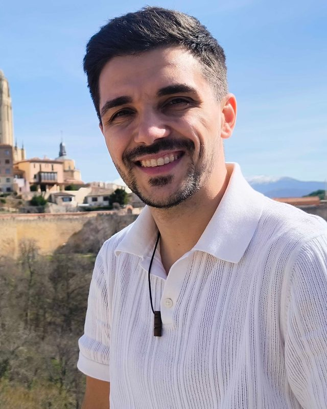
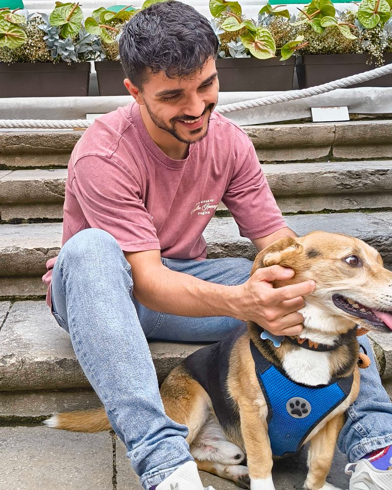

My book
La poesia sull'albero
Poetry collection · Pagine, 2016
I started in Italy. I studied Economics at the University of Catania, I worked in financial consulting and B2B sales from 2012 to 2015, and I wrote as a freelance local news contributor for the daily newspaper La Sicilia (2012-2013).
From 2015 to 2019 I was a flight attendant with Ryanair in Barcelona: 800+ international flights in a safety-critical role.
I joined Amazon in 2019 as a Vendor Support Associate in Barcelona. From 2020 to 2026 I was a Manager in Selling Partner Support, the B2B support for EMEA selling partners, leading teams of 15-45 people, fully remote from April 2021, across 4 time zones.
Since January 2026 I have been Learning Manager I at the VLC1 Fulfillment Center in Castellón. I lead 5 trainers for 500+ associates, and the L&D tools I built are used by multiple Spanish fulfillment centers.
I live in Castellón de la Plana, Spain. I'm open to remote work (EU/EMEA) and to relocating to Galicia.

My book
Poetry collection · Pagine, 2016
Amazon leadership programs, certified behavioral interviewer and certified facilitator for mid-level leadership training.
EMEA CSR ambassador: I organized 5 cross-regional volunteering initiatives with 450+ participants.

Outside work, I'm a lifelong Juventus fan and I go to the stadium whenever I can. I read a lot and I still write: my poetry collection "La poesia sull'albero" came out in 2016. I listen to music all day, mostly Italian. Four years as a flight attendant left me with a love of travel that never went away. At home there's Ciak, my dog. And I'm a gamer and a fantasy fan: Pokémon, Game of Thrones, The Lord of the Rings, Harry Potter, Marvel.